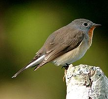
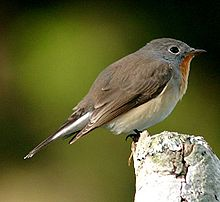

| Red-breasted Flycatcher | |
|---|---|
|  | |
| Ficedula parva albicilla | |
| Conservation status | |
| Binomial name | |
| Ficedula parva (Bechstein, 1792) |
| Red-breasted Flycatcher | |
|---|---|
|  | |
| Ficedula parva albicilla | |
| Conservation status | |
| Binomial name | |
| Ficedula parva (Bechstein, 1792) |
The Red-breasted Flycatcher (Ficedula parva) is a small passerine bird in the Old World flycatcher family. It breeds in eastern Europe and across central Asia and is migratory, wintering in south Asia. It is a regular passage migrant in western Europe, whereas the Collared Flycatcher which breeds further west is rare. This is because of the different migration direction.
The Asian race Ficedula parva albicilla has the red throat surrounded by grey and a different song. It is sometimes separated as the Taiga Flycatcher, or Red-throated Flycatcher, Ficedula albicilla (Pallas, 1811).
The breeding male of this small 11–12 cm long flycatcher is mainly brown above and white below, with a grey head and orange throat. The bill is black and has the broad but pointed shape typical of aerial insectivores. As well as taking insects in flight, this species hunts caterpillars amongst the oak foliage, and will take berries. The base of the outertail feather is white and the tail is often flicked upwards as they perch looking out for insect prey which are caught on the wing or sometimes from the ground. In winter they are mostly silent but have a typical chip-chip-chr-rrr flycatcher call. In their breeding season, the song consists of melodious whistles, like that of the Pied Flycatcher.
Non-breeding males, females and juveniles have brown heads and lack the throat collar, but are easily distinguished from other Ficedula flycatchers on size and the wheatear-like tail pattern, with an inverted dark T against the white tail sides.
They are found mainly deciduous woodlands, especially near water. They build an open nest in a tree hole or similar recess. 4-7 eggs are laid.
Studies on their spring arrivals to the breeding quarters in Poland from 1973-2002 show that males are returning earlier with increasing temperatures.[2]

{kind=link}
_at_Sindhrot_near_Vadodara,_Gujrat_Pix_112.jpg){kind=link}